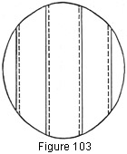
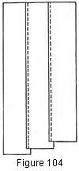

1930—Millinery Processes
by Carlotta M. Brown
RIBBON HATS
The ribbon hat is a favorite for early fall, spring, and summer wear. It is made in all shades to match sport or dress costumes. It is extremely light in weight and comfortable on the head, for it is usually made without a fabric foundation. If, however, stiffness is preferred, the ribbon may be sewed together first, and then slipped over the fabric foundation, or it may be attached to the foundation with the joining of each strip. Since it cleans readily and does not get out of shape, it is very practical. Belting, grosgrain, or taffeta is usually chosen for hats of this type. The ribbon used ranges in width from 1 inch to 8 or 9 inches, according to the special construction. The wider the ribbon, of course, the fewer the yards required.
Crown Top
Cut a paper oval the size of the crown top desired plus a half-inch seam (Fig. 89). When using narrow ribbon, sew the strips together on the machine or by hand. If sewed by hand, a very small long-and-short stitch is used, making the stitch on the right side as nearly invisible as possible. Trim a perfect line around the outer edge of the oval.
If an uneven number of strips is needed to complete the oval, start with a central strip of ribbon running the length of the oval from front to back in order to make it uniform. Place the other strips of the ribbon under this central strip and continue the shorter strips on each side until the oval is completed. The lappings are made in opposite directions from the central strip (Fig. 103). If an even number of strips is to be used, start at one side of the oval, placing each succeeding strip under the preceding, and sew in the same manner as for an uneven number of strips. The lappings in this case are made in the same direction across the entire width of the oval.
Side Crown
The head-size measurement must be carefully taken before cutting the strips of ribbon (see Measurements). Allow for half-inch seams. Since the standard crown depth is 9 inches from the tip of the crown to the base, the number of strips needed for the side crown may be determined from this measurement. If a large oval has been used for the crown top, fewer strips will be needed to complete the side crown. When stitching with the thread running along the finished edge of the ribbon, lap the ribbon just enough to secure it and to conceal the stitching beneath it. If the effect of height is wanted, the ribbons are lapped from the base upward ; if decreasing height is desired, they are lapped from the top downward. Sew the back seam by machine, and press. Mark the quarters of both the side crown and the oval and join.
Brim
Ribbon brims may be made from a single thickness of ribbon or they may be made double, according to the weight of the ribbon and to individual taste. As these brims are usually very narrow, it is seldom necessary to use more than two strips of ribbon. If plaits are to be folded in at the side or back, allowance must be made when measuring for the brim strip; if a close-fitting brim is to be attached, an allowance of from 1½ to 2 inches is sufficient. This fullness may be distributed evenly around the head size or placed at certain points to give a more decided roll, or dip, to the brim.